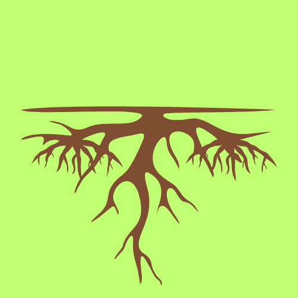

mon1111
mono2222
mono3333
mono4444
Fleurs
Feuilles
Tiges

Racines
dico1111
dico2222
dico3333
dico4444
Espèces des mauvaises herbes
les adventices
les herbes
Les Monocotylédones
les Dicotylédones
Les mauvaises herbes sont des plantes non désirées qui poussent spontanément dans des environnements où elles ne sont pas voulues,comme les jardins, les cultures ou les pelouses, compétitionnant avec les plantes cultivées pour les ressources et pouvant affecter leur croissance.
Les adventices, aussi appelées mauvaises herbes, sont des plantes non désirées qui poussent parmi les cultures et les jardins, concurrençant les plantes cultivées pour les ressources et pouvant abriter des parasites et des maladies. Leur gestion est cruciale pour la productivité des cultures.
Les Monocotylédones sont des plantes à fleurs dont l'embryon a un seul cotylédon. Elles incluent des plantes comme le blé, le maïs, les orchidées et les palmiers. Elles se caractérisent par des feuilles souvent étroites et parallèles, des racines fibreuses, et des fleurs généralement en multiples de trois.
Les Dicotylédones sont des plantes à fleurs dont l'embryon possède deux cotylédons. Elles incluent des plantes comme les roses, les haricots, les érables et les chênes. Elles se caractérisent par des feuilles à nervures réticulées, des racines pivotantes, et des fleurs généralement en multiples de quatre ou cinq.
mon1111
mono2222
mono3333
mono4444
Fleurs
Feuilles
Tiges
Racines
dico1111
dico2222
dico3333
dico4444
Nous explorons les différences entre les mauvaises herbes monocotylédones et dicotylédones, ainsi que la distinction entre mauvaises herbes et adventices. Découvrez comment ces classifications influencent la gestion des plantes indésirables dans divers environnements.